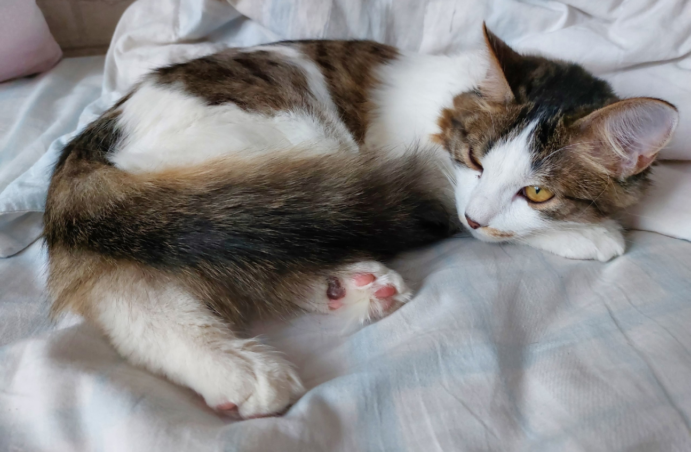

В Бурятии во время «переписи» диких животных нашли следы соболя и косули
В Бурятии вовсю идёт зимний маршрутный учёт - своеобразная
перепись диких животных.
В Северо-Байкальскому районе учётные работы
проводят государственный инспектор Бурприроднадзора Евгений
Дубников и производственные охотинспекторы хозяйства «Охотник
Северного Байкала». Специалисты увидели следы косули и соболя.
На основе комплексной системы наблюдения, оценки и прогноза
состояния среды, осуществляется государственное управление в
сфере охраны и воспроизводства объектов животного мира,
рационального использования охотничьих ресурсов, - пояснили в
Бурприроднадзоре.
Зимний маршрутный учёт на
территории республики Бурятия пройдет до конца февраля.
В Улан-Удэ восемь собак и кошек
обрели дом благодаря волонтёрам

Представители улан-удэнского фонда «Собака счастья»,
которые помогают беспризорным и попавшим в беду животным,
поделились в соцсетях радостными новостями.
Сразу
восемь их подопечных в январе обрели дом. Зооволонтёры
перечислили всех поимённо в своей официальной группе во
«ВКонтакте» и поблагодарили неравнодушных подписчиков.
В Бурятии неизвестные сломали
котику челюсть

Теперь ему требуется срочная операция. Этот вопиющий
инцидент произошёл в Кяхте. Местные жители нашли на улице
окровавленного бело-рыжего котика. Они не бросили животное в
беде, а забрали с собой и увезли в ветеринарную клинику.
- Cказали, что ему сломали челюсть - скорее всего,
палкой. Требуется срочная операция. Для этого сегодня нужно
отвезти его из Кяхты в Улан-Удэ, - поделились кяхтинцы в
telegram-канале «Blog Kyakhta».
Там уже объявили
сбор средств на лечение пушистика. Внести посильную сумму в
его спасение могут все желающие.
Как сообщал
«Байкал-Daily», в конце июля живодёр выстрелил из арбалета в
рыжего кота по кличке Кузя. Случилось всё в заиграевском
посёлке Татарский Ключ. Стрела пронзила несчастное животное
насквозь.
Фотографии с ним тут же облетели соцсети
и вызвали широкий резонанс. Хозяева - местная жительница и её
дочка - увезли своего питомца в ветлечебницу. Специалистам
пришлось извлекать стрелу под наркозом.